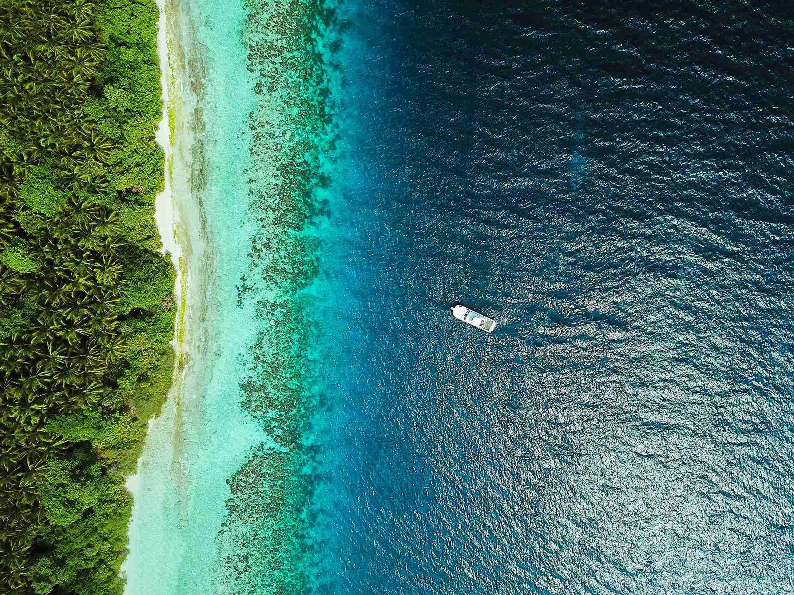

Jelajahi Pesona Laut Indonesia.

Indonesia, negara kepulauan terbesar di dunia, menyimpan keindahan
alam bawah laut yang memukau. Dikelilingi oleh samudra yang luas,
Indonesia menawarkan pesona laut yang tak tertandingi. Dari perairan
hangat di sekitar Pulau Bali hingga keindahan terumbu karang di Raja
Ampat, setiap sudut perairan Indonesia memiliki daya tariknya
sendiri bagi para penyelam dan penggemar keindahan alam bawah laut.
Salah satu destinasi yang paling terkenal adalah Raja Ampat, yang
sering dianggap sebagai surga bagi penyelam. Terumbu karangnya yang
berwarna-warni dan keanekaragaman hayatinya yang luar biasa
membuatnya menjadi tujuan impian bagi para pecinta laut. Tidak hanya
itu, Indonesia juga memiliki Taman Nasional Bunaken di Sulawesi
Utara yang menawarkan pemandangan bawah laut yang memukau dengan
beragam spesies ikan dan terumbu karang yang masih alami.
Namun, keindahan laut Indonesia tidak hanya terbatas pada
penyelaman. Aktivitas lain seperti snorkeling, berselancar, dan
berlayar juga menarik minat wisatawan dari seluruh dunia.
Pantai-pantai pasir putih di Pulau Lombok, Pulau Komodo, dan Pulau
Mentawai menjadi tempat ideal untuk bersantai sambil menikmati
keindahan alam yang masih alami.
Berpetualangan di Piramida Mesir Kuno.

Piramida Mesir Kuno telah menjadi sumber keajaiban dan misteri
selama ribuan tahun. Dibangun oleh peradaban Mesir kuno sebagai
tempat pemakaman untuk para firaun, piramida-piramida ini menjadi
salah satu keajaiban dunia yang paling mengagumkan dan menjadi daya
tarik bagi para petualang dan peneliti sejarah.
Piramida terbesar dan paling terkenal di antara semuanya adalah
Piramida Giza, dengan Menara Kehidupan yang megah dan tak
terlupakan. Sejumlah petualang modern telah memasuki lorong-lorong
dan ruang rahasia di dalam piramida ini, mencoba memecahkan misteri
yang mengelilinginya. Mereka mencari tahu tentang bagaimana
piramida-piramida ini dibangun, apa tujuan sebenarnya dari
struktur-struktur yang megah ini, dan mungkin mencoba mengungkap
rahasia-rahasia yang tersembunyi di dalamnya.
Namun, berpetualang di dalam piramida tidaklah mudah. Lorong-lorong
yang gelap dan sempit, perangkap-perangkap yang mungkin tersembunyi,
dan teka-teki yang sulit untuk dipecahkan menjadi tantangan bagi
setiap petualang yang memasuki ruang-ruang bawah tanah ini. Namun,
bagi mereka yang berani dan penuh semangat, pengalaman berpetualang
di piramida Mesir Kuno bisa menjadi salah satu momen paling berkesan
dalam hidup mereka.
Mencari Pengalaman di Hutan Amazon.

Hutan Amazon adalah salah satu dari sedikit tempat di dunia yang
masih menyimpan keajaiban alam yang belum tersentuh. Dengan luasnya
yang mencapai jutaan kilometer persegi, hutan ini merupakan rumah
bagi jutaan spesies tumbuhan dan hewan, serta memainkan peran
penting dalam keseimbangan ekologis global. Bagi para petualang dan
pecinta alam, menjelajahi Hutan Amazon adalah pengalaman yang tak
terlupakan.
Ketika memasuki labirin dedaunan hijau yang lebat, para pengunjung
disambut oleh beragam pemandangan yang menakjubkan. Sungai-sungai
yang mengalir deras, air terjun yang spektakuler, dan kehidupan liar
yang melimpah menjadi bagian dari pesona alam Amazon yang memikat.
Tapi petualangan di hutan ini bukan hanya tentang melihat
pemandangan indah, tetapi juga tentang terlibat dalam pengalaman
langsung dengan alam.
Salah satu cara terbaik untuk merasakan keajaiban Hutan Amazon
adalah dengan melakukan perjalanan mendayung di sungai-sungai yang
melintasi hutan. Melalui perahu kano atau perahu motor, para
petualang dapat menyusuri air yang tenang atau bergerak deras,
melintasi hutan yang subur sambil mengamati kehidupan liar di
sekitarnya. Ini adalah kesempatan unik untuk melihat berbagai
spesies binatang seperti kera, burung hias, buaya, dan bahkan
lumba-lumba sungai.